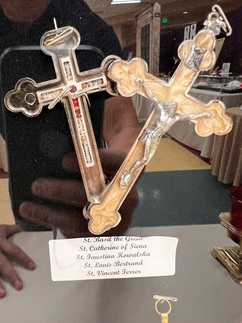

The label is in English
Two reliquary crucifixes with five saints
On the label
St. Basil the GreatSt. Catherine of SienaSt. Faustina KowalskaSt. Louis BertrandSt. Vincent Ferrer
In English
Saint Basil the Great, Saint Catherine of Siena, Saint Faustina Kowalska, Saint Louis Bertrand, and Saint Vincent Ferrer.
Saints named
A dark crucifix with a row of small relics in its arms and a pale crucifix with a corpus. The slips inside the crosses are too small to read; the names come from the card, whose top line is partly covered.